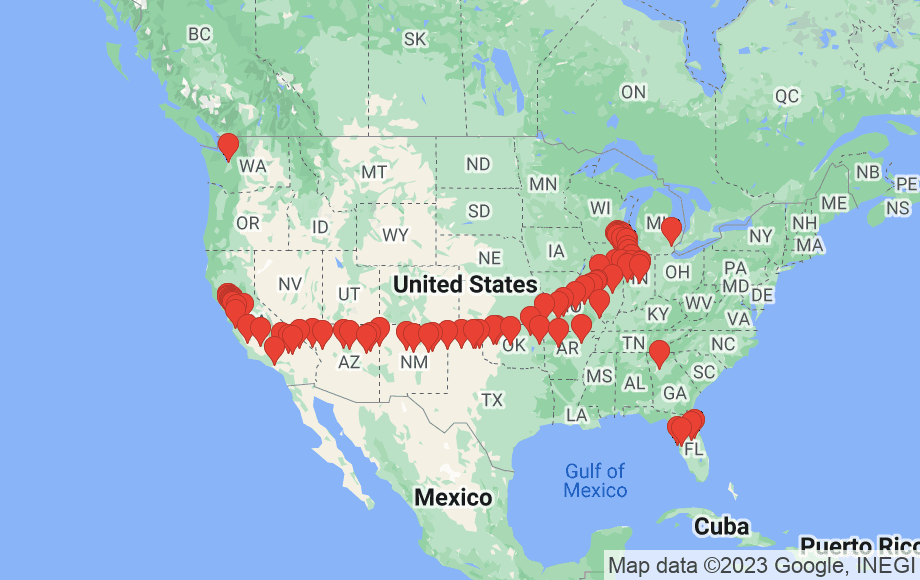

我的世界之锚⚓️。
今年的 BGM 选的是宝宝最爱的 cocomelon! 每次放这个，宝宝都聚精会神地看，从而能乖乖磨指甲。
总结：⚓️
久违了，我似乎有些失语，不知道能写些什么，要写些什么。上次更新已经是8个月前，整个2022自然年一共只有两篇产出，是2010年之外最少的，2010是刚开始动笔的上古时期，也是那一年才开始写日记的，所以说是有信史以来产量最低的一年也不为过。翻看上一篇，感觉自己写不出半年多前那样的文字了，确实生疏了。
那个时候，我刚刚带着滚滚开着车横跨了大半个美国，日常蹭公司食堂苟活，然后每3-4周再和滚滚一起飞回村里呆一周多看娃。这样的生活持续了大半年，一直到感恩节之后，计划永远赶不上变化，我们正式重新永久团聚。
 👆🏻2022足迹
外部世界也早已天翻地覆。上半年似乎还是岁月静好，下半年业界已经是一波还未平息，一波又来侵袭，茫茫人海狂风暴雨。很幸运，年初就入职了，很幸运，组里氛围挺好、前景看起来也比较稳当。就在这篇动笔之后，敝司也经历了大裁员，很幸运，自己没有受到太多波及。
对我而言，工作真的比最后几年的学校里头开心太多了，目标清晰，而且富含流动性，转组、跳槽都是可行性，不像学校里头没有很好的退出机制。老板问过我，工作中最享受的地方是哪里，我的答案是 git rebase——「把写好的 commit chain 重整为井井有条、自洽、一目了然的样子」这本身就极具美感！终究还是个程序猿。
我自认已经是个非常不在意外在物质条件的人了，但有时却也会冒出一些懊悔情绪，遗憾自己错失了许多的机会成本，在过去多年的好光景年份中。即使这类情绪最终总会消散，但总归是个 debuff，2022年我开始有了个更加斩钉截铁的回答。假使某个节点上重新做出选择，我和 Bing 依旧可以结婚，但这一个特殊的宝宝应该就永远消失了。换句话说，这个最终降临的全局唯一的乖宝，为其历史链上的所有先前事件都赋予了意义。从这个角度上说，宝宝就是我的世界之锚⚓️。
我们都很爱他，那种老母亲/老父亲想到就满足的笑，是宝宝出生前的我完全无法感受的。有多爱呢，我和 Bing 都愿意不顾财政压力再生一个的那种。可要不是宝宝一周岁之后启动的「去年今日」读日记活动，要不是铁证如山的文字记录，我都快忘了宝宝头几个月我们俩每天睡眠不足的惨状了，所幸后来能排到学校的优质 daycare。而且当宝宝的需求增长到不仅仅是吃喝拉撒时，养娃的压力瞬间上来了，幸好宝宝有个厉害的妈妈，能搜索整理许许多多的信息。说到这个，欢迎关注宝妈小红书🙏：

读什么读
时代确实变了。留给阅读的时间更加少了，其中技术阅读还占了一大部分，视野收窄了很多，因此2022年初以来读完的书愈发少了，只有8本。。。这样下去，下边这个表格很快就不用再列了，贻笑大方。
| 2015 | 2016 | 2017 | 2018 | 2019 | 2020 | 2021 | 2022 |
|---|---|---|---|---|---|---|---|
| 58 | 79 | 64 | 25 | 53 | 72 | 45 | 8 |
不过在这种状况下，真正读下去的就都是好东西了：
《翦商》
- 其实是进入2023年才开始读的，读之前已经看到各种渠道的多次推荐，果然不负盛名，好看，非常好看，从考古学证据出发阐释商朝以及西周代商，非常有说服力！但是后劲太大了，时不时得缓一缓。人间地狱必须被翦除，郁郁乎文哉，我从周。
- 忽左忽右有一期作者对谈节目《218 与李硕漫谈《翦商》：上古先民的黑暗史话 》，配套食用。
《What to Expect the First Year》
- 翻了许多养宝书，最终读了不少的只有这本。核心原因或许是它按月介绍，可以每个月看对应章节，不用一次看完。而且确实非常详尽，看这一本确实就够了。
《Software Engineering at Google》
- 这本是在 OReilly 上听完的，完美解答了我一年多前的疑惑——业界到底是/应该是如何干活的。书里从文化、流程、工具、实践一个个点过来，足以一窥全貌。
《沟通的方法》
- 也是看到多个信源推荐才来读的，确实很棒，棒在开阔眼界，几个例子就明明白白告诉你，原来职场里可以这么说话，没人点就是不知道哇，说工具书不为过。
-
- 是网络小说，但是是把经济学、管理学的套路融入到情节中，而且还有不少罕见的讽刺梗，我可太喜欢这样用现实理论去尽可能真实构建幻想世界的内容了！很难不想到16年就推荐过的《奥术神座》，用科学解释奥术，那时的乌贼老师还没有写出《诡秘之主》。
看什么看
有了宝之后，我们没有再去过电影院。根据豆瓣记录，2022年看了27部影视作品。继续下降，符合预期。
| 2015 | 2016 | 2017 | 2018 | 2019 | 2020 | 2021 | 2022 |
|---|---|---|---|---|---|---|---|
| 124 | 111 | 115 | 75 | 76 | 63 | 37 | 27 |
最喜欢的是：
- 《一场很（没）有必要的春晚》
- 其实这部在2022年春节前就上线了，但是我直到下半年才看到。至少有两三次都笑抽抽了！！就像，就像是加长版的一年一度喜剧大赛（第一季），但这么好玩的东西豆瓣只给到7.6吗？
剩下的其实都有一些槽点，但还是值得：
-
- 还是比较认真地追了二喜的，《少爷和我》、《进化论》、《遇人不赎》，可以说是二喜屎里淘出的真正金子。不比不知道，一喜真是NB！另外作为对比，春晚那些语言类都是些什么玩意。
《再见爱人2》（还没看到最新）
- 去年我就非常喜欢《再见爱人1》，这一季感觉比第一季更加drama了，但依旧有一些真情实感在，真诚永远是必杀技。这里还是建议每一对嘉宾都早点去 couple therapy 真诚有效地沟通。
- 和去年的感想一样，在比烂的大环境下，我们真幸福🙏！
和往年一样，我们的大部分时间花在了B站上，但以每期必看为标准，大概就只有下边这些UP主了：
-
- 督公是真真正正的媒体战士！比如以岭药业的几期，正威集团的几期，年底合订本的几期。希望世间多一些督公🙏。
-
- 单纯是出于对 UP 主学识和观点的欣赏。
-
- 足坛电子厂系列，快乐源泉！
-
- 地图+姓氏，人文地理。
听什么听
耳朵的争夺在2022年间也有起伏，年中的时候听电子书，下半年后来回到播客，开始补翻电的中国历史系列专辑。以每期都会点开来听的严格标准（因此排除了技术类播客），大概就只有下边这些台了：
《谐星聊天会》
- 每年都列在第一个，有谐聊陪伴，有福啊！
- 另外如果要我推荐一个谐星聊天会的视频的话，那就是这个了。
-
- 听真正的文化人带来的智识享受。大胆开麦，程衍梁老师未来的成就我相信能超越梁道长！
《翻转电台》
- 这次把翻电讲中国历史的系列都补完了，并且把翻电2.0的之前俩系列也都补上了。之前取关过，当时对观点有不少异议的地方，并且对整个话题的兴趣都淡了。这次讲到中国历史，有些兴趣了，就又跟上了。
- 当讲到科学事实的例子时，翻电的说服力是最低的，在这之外，都很有说服力。这个系列回到现场探访思想史和制度史，我们何以成为我们，代表曲目或许可以是讲道德经的这一期，越长大越认同这种“过于简化其实是没有啥深刻的大道理”的观点了。
- 不是所有都认同，但绝对认可如果有更多人听到翻电，世界会更加美好一些。
《不在场》
- 从一首特定的歌聊开去。头两个月半夜看宝宝其它啥都不想听的时候我就愿意听这个，心能静下来，愿意不倍速。
- 重轻老师就是质量保证！
另外，特别鸣谢毛书记的《Ep83 一位文艺爱好者的自我修养》这一期，通过声音的补充，长者重新变回了活生生的人。
玩什么玩
双人
我们只是把《星之卡比：探索发现》打完了，但里头2P的角色只能使用瓦豆鲁迪，乐趣比上一代少了非常多。期待宝宝能一起加入游戏的那一天！
单人
剩下就都是单人游戏了。
-
- 年初趁着热潮还没过去的时候我也玩了，扔球收集本身确实挺开心的。
《艾尔登法环》
- 年初大火的时候跟着看了不少攻略视频，心痒痒的也就入了，曾经以为是我也能玩得下去的魂系开放世界，但跟着攻略视频还是只到了利耶尼亚就弃坑了，实在是量太大了。。
《哈迪斯》
- 年中对于roguelike有兴趣的时候入的，roguelike的兴致很快就消退了，但是游戏这层叙事的壳与游戏玩法实在是浑然天成！
《刺客信条：奥德赛》
- 21年就开了档，22年听到古希腊相关的播客节目后重新开了坑，换成了弓箭武器，太好玩了！这次把主线和想做的任务都通了。觉得🏹真香、主线有点短、风景确实好，回味无穷。
- 之后顺势玩了玩下一款《刺客信条·英灵殿》，但是有奥德赛珠玉在前，英灵殿就是玩不下去，哪哪都不对的感觉。
□
就到这里吧，已经是🐰年了，23年希望宝宝继续茁壮成长，也希望我俩都能苟住、职业道路都有所发展💪。